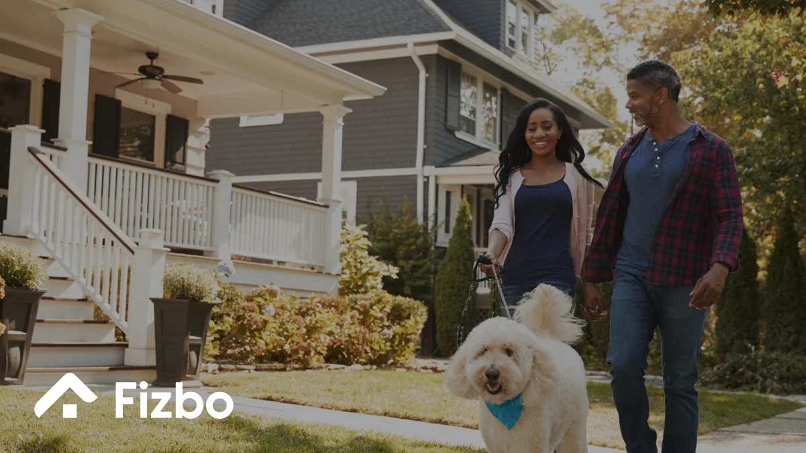
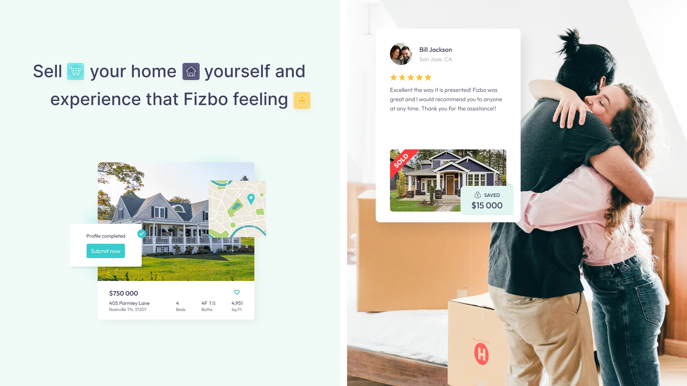
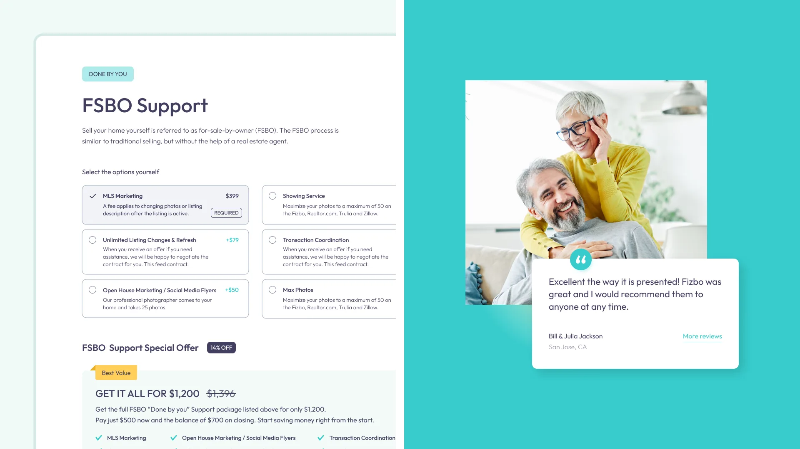
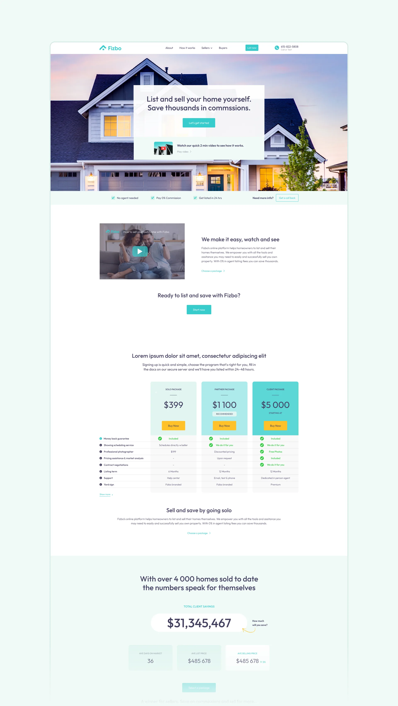
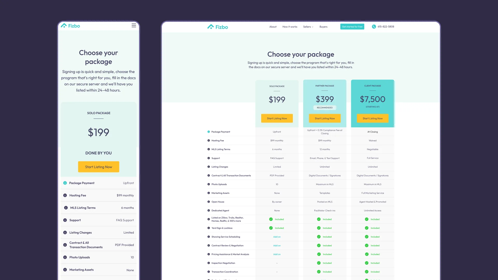
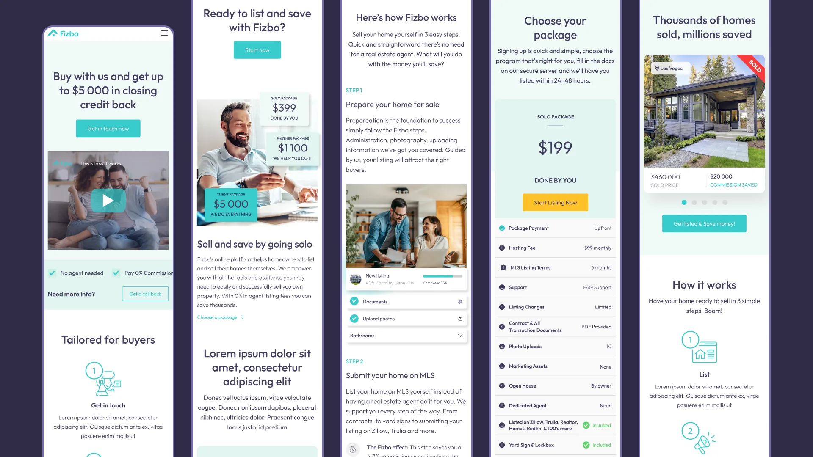
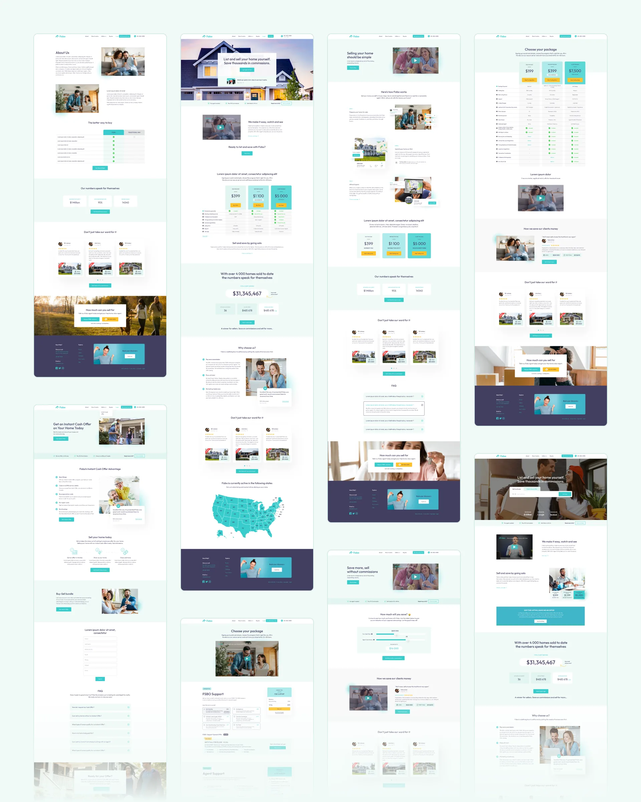

Fizbo · via NewDay agency · Nashville, TN
A big claim, made credible in five weeks
Building an FSBO marketplace’s launch site fast enough to matter, and credible enough to justify skipping a real estate agent.

Results
5 weeks, zero to development-ready
No brand, no screens, no code at kickoff — a complete, development-ready product five weeks later.
3 packages, 1 ladder
Solo, Partner, and Client tiers made comparable in one table instead of a sales call.
3 core surfaces, one system
Marketplace, listing page, and selling hub built from one shared component set.
Situation
Fizbo’s whole pitch is a claim buyers are primed to distrust: sell your own home, skip the agent, keep the commission. That claim needed to look credible fast — the entire site had five weeks from concept to launch.
There wasn’t time for a slow build-up of trust across a dozen sections. The proof that mattered had to work from the first screen.
Deciding insight
Fizbo started with no brand, no screens, and no code — just a claim buyers are primed to distrust: sell your own home, skip the agent, keep the commission.
Pairing every package with a real listing, a real map, and real progress-tracking instead of abstract description did more convincing than persuasive copy could in the time available.
Research
Compared how competing FSBO and agent-assisted platforms handled the same trust problem, and settled on three concrete packages — Solo, Partner, Client — each priced and specified in one table, so a first-time visitor could self-serve the comparison an agent would normally walk them through.
Underneath the marketing ladder sat the three surfaces that carry the actual product: a Properties Marketplace to browse active listings, a Listing Page combining photos, pricing, a map, and specs, and a Selling Hub with progress-tracking for homeowners moving through the sale.


Approach
Built the three-package ladder as the marketing site’s spine, then designed the product itself from zero: the Properties Marketplace for browsing active listings, the Listing Page combining photos, pricing, a map, and specs, and the Selling Hub carrying homeowners through progress-tracked steps to close.
Kept the whole build inside the five-week window by reusing one component set — package cards, listing cards, review cards — across every marketing and product template instead of designing each page from scratch.




"They took our vision and transformed it into a sleek, intuitive platform that empowers homeowners to sell their properties with ease. The attention to detail, user-friendly interface, and cohesive brand identity perfectly reflect our mission."